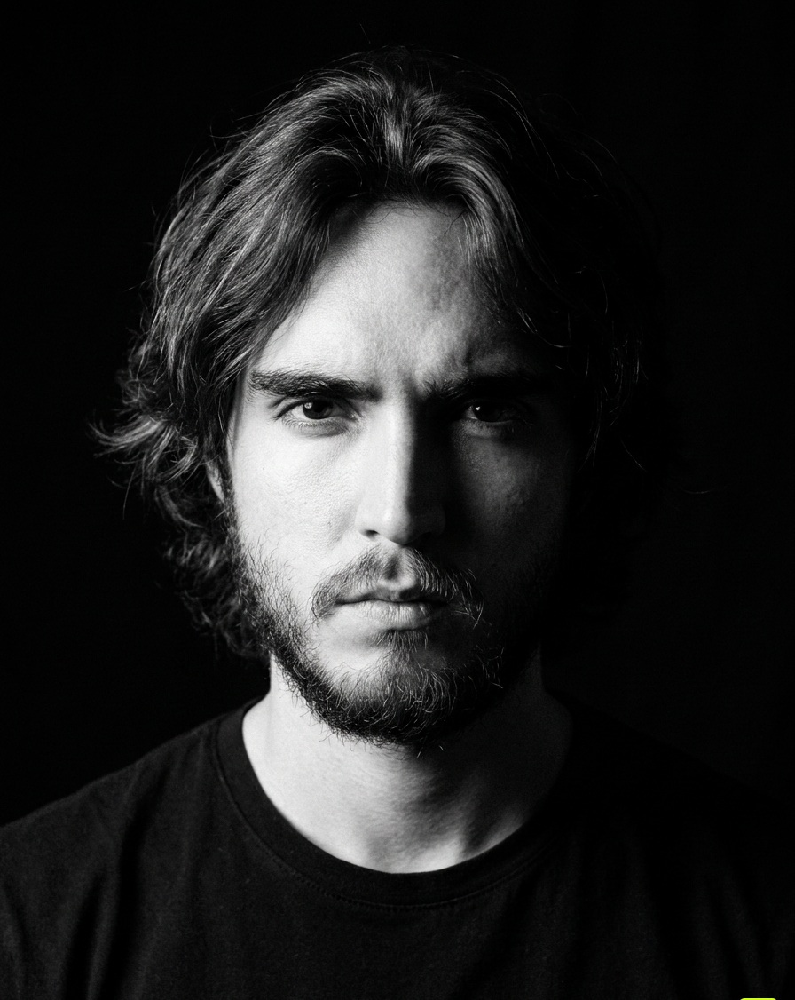

ANDRÉMACOUZET
«La paciencia es la ventaja. Todo lo demás es ruido.»
Opero futuros del Nasdaq bajo una sola regla: un trade al día. NORTHPOINT es la firma que estoy construyendo — respaldamos a traders que ya demostraron ser rentables y les pagamos sus evaluaciones.

Récord de payouts
| Fondeadora | Fecha | Monto |
|---|---|---|
| Apex | 15 abr 2026 | $2,000 |
| Apex | 15 abr 2026 | $2,000 |
| Apex | 15 abr 2026 | $509 |
| Tradeify | 17 jun 2026 | $944 |
| Tradeify | 15 jun 2026 | $1,000 |
| Tradeify | 12 jun 2026 | $1,000 |
| Tradeify | 11 jun 2026 | $1,000 |
| Tradeify | 20 may 2026 | $888 |
| Tradeify | 19 may 2026 | $450 |
| Tradeify | 18 may 2026 | $438 |
| Tradeify | 13 may 2026 | $461 |
| Tradeify | 13 may 2026 | $409 |
| Tradeify | 13 may 2026 | $387 |
Trece retiros cobrados entre abril y junio de 2026, en dos firmas distintas. Van con fecha y monto porque NORTHPOINT le pide cinco payouts a quien quiera entrar — el que los exige enseña los suyos primero.
Lo que hago
Futures day trading
Micro Nasdaq (MNQ) en la sesión de Nueva York. Un solo trade al día, stop fijo y bitácora de cada fill. Trece payouts cobrados en dos fondeadoras.
Programación
Construyo el software con el que opero — el terminal, el journal, el calendario de reglas — y todo lo que ves en este dominio. JavaScript, Python y Swift, sin frameworks de por medio.
Datos y backtesting
Mido antes de creer. Indicadores propios en Pine, backtests sobre histórico real y métricas de disciplina — profit factor, drawdown, reglas rotas. Lo que no aguanta la prueba se tira.
Automatización e IA
Uso IA como herramienta de trabajo diaria, no de adorno: sincronización en la nube, análisis del journal y todo el pipeline de la firma construido con ella.
Producto y diseño
De la idea a la web publicada: interfaz, tipografía, motion y la arquitectura de datos detrás. Nada aquí se subcontrató.
Gestión de riesgo
El catálogo de las seis fondeadoras que opera la mesa, verificado plan por plan: drawdown trailing contra EOD, límites diarios y reglas de payout. Es lo que evita quemar una cuenta por leer mal un contrato.
La mesa

Dos pantallas: una para el contexto, otra para ejecutar. La libreta siempre abierta al lado — cada trade se escribe, con captura, el mismo día.
La firma
NORTHPOINT no le vende el sueño a nadie. La idea es al revés de lo normal en este nicho: primero demuestras, después entras. Si ya sacas payouts —si ya probaste que sabes hacer esto— nosotros pagamos tus evaluaciones y construimos juntos. Tú pones el talento, nosotros el capital.
La mesa se transmite en vivo, incluidos los días en los que no pasa absolutamente nada. Esa es la parte que nadie enseña: todo mundo enseña la entrada, nadie enseña las tres horas de no hacer nada que vienen antes.
El apellido
Macouzet viene de Lyon, Francia. Jean-François Macouzet llegó a Michoacán y en 1829 fundó el Protomedicato de Morelia — la institución que ordenó por primera vez el ejercicio de la medicina en el estado. Casi dos siglos después el apellido sigue en Morelia, y sigue construyendo instituciones donde antes había criterio suelto.